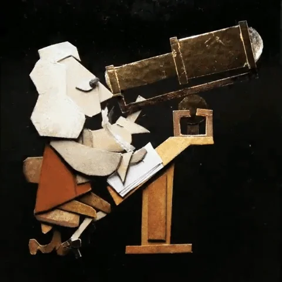

Didattica

Approfondimenti
(Testi a cura di Piero D'Incecco)
📜 Storia dell'Astronomia
Un viaggio dall'antichità alla rivoluzione scientifica: da Tolomeo a Newton.
⚛️ La Relatività
Comprendere i concetti fondamentali della teoria di Einstein.
🕳️ I Buchi Neri
I misteri degli oggetti più densi dell'universo.
💥 Il Big Bang
L'origine dell'universo e la sua evoluzione.
☀️ Il Sistema Solare
Una panoramica sui nostri vicini cosmici.